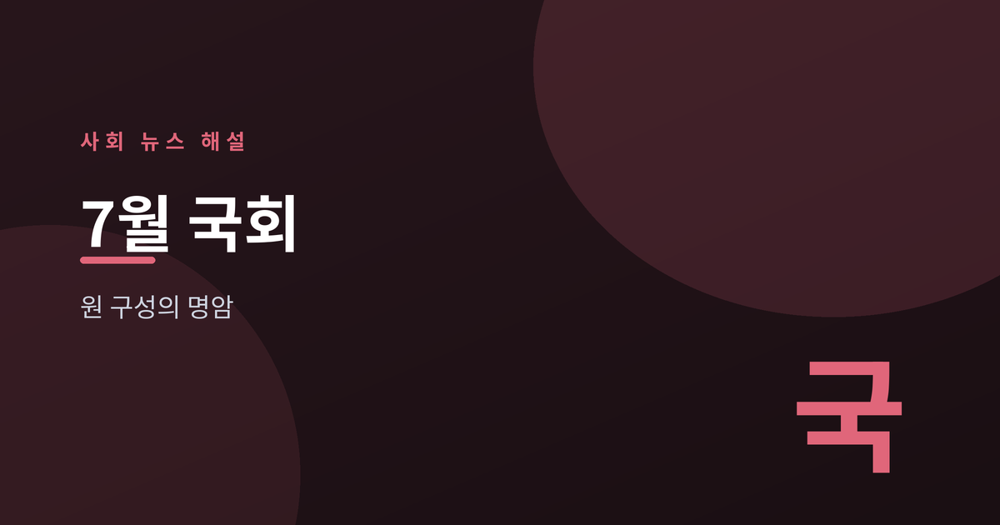
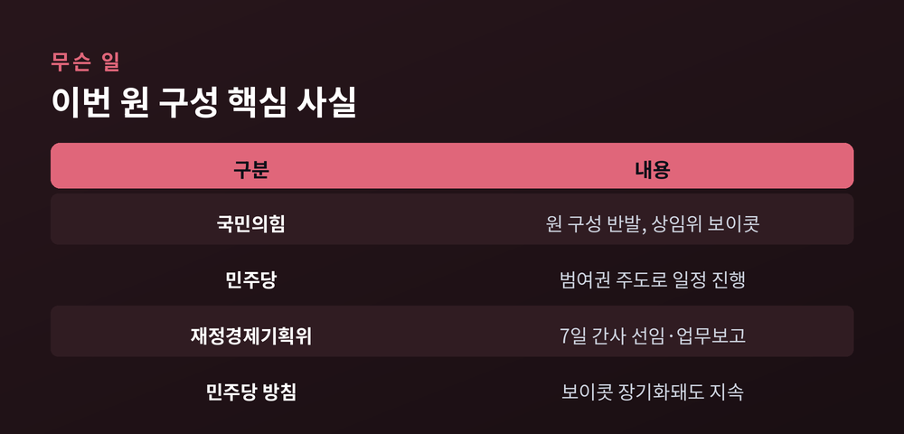
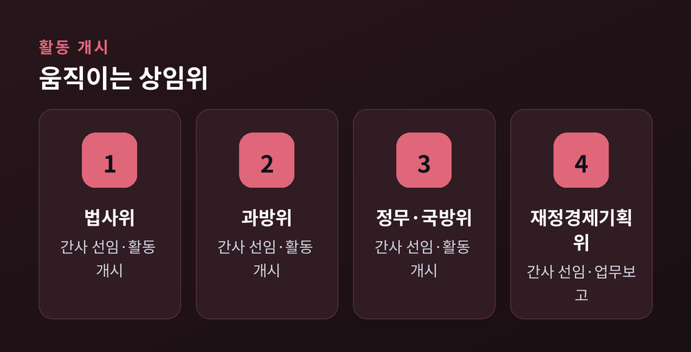
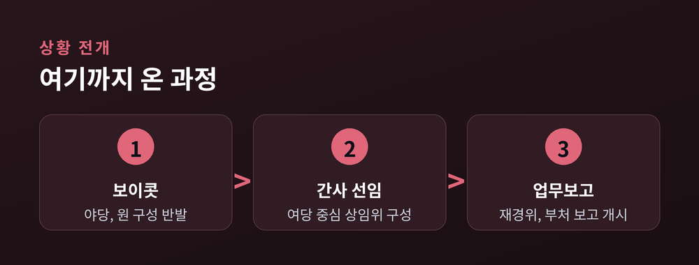
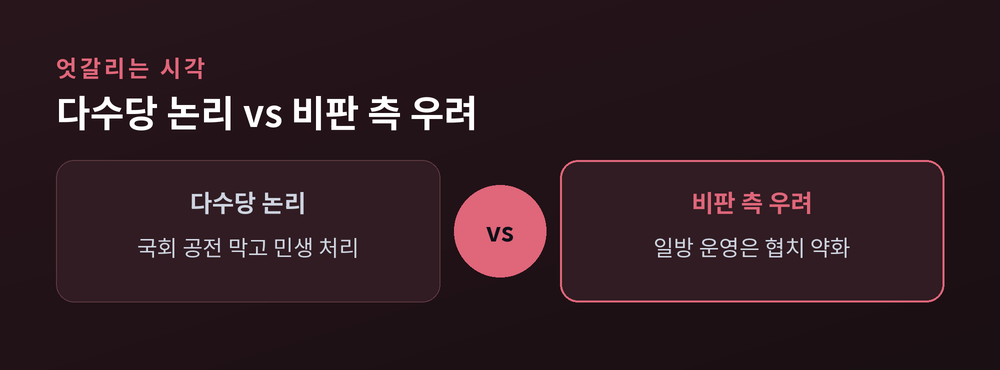

민주당 주도 원 구성의 명암

7월 국회가 열렸지만 한쪽 자리가 비어 있습니다.
국민의힘이 원 구성에 반발해 상임위 활동을 보이콧한 가운데, 더불어민주당 주도로 의사일정이 진행되고 있습니다.
이번 글에서는 지금 무슨 일이 벌어지고 있는지, 왜 중요한지, 앞으로 어떻게 될지를 어느 한쪽에 치우치지 않고 짚어보겠습니다.
발단은 원 구성을 둘러싼 여야의 이견입니다.
국민의힘은 민주당 주도의 원 구성에 반발해 상임위 보이콧에 나섰습니다.
그러나 국회 의사일정은 민주당 위주로 계속 돌아가고 있습니다.
이미 여러 상임위가 활동을 시작했습니다.
법제사법위원회, 과학기술정보방송통신위원회, 정무위원회, 국방위원회가 여당 간사를 선임하고 활동을 개시했습니다.
7일에는 재정경제기획위원회가 간사 선임과 함께 재정경제부·국세청 등으로부터 업무보고를 받았습니다.

야당이 빠진 자리에서 여당이 일정을 이어가는 모습입니다.
민주당은 국민의힘의 보이콧이 장기화되더라도 범여권 주도로 의사일정을 계속하겠다는 방침을 밝혔습니다.
먼저 활동을 개시한 상임위를 정리해 보겠습니다.
각 위원회는 여당 간사 선임을 마치고 실무에 들어갔습니다.

법사위는 법안 심사의 관문이고, 과방위는 방송·통신 현안을 다룹니다.
정무위는 금융·공정거래를, 국방위는 안보 사안을 관할합니다.
여기에 재정경제기획위가 업무보고까지 받으며 예산·조세 논의의 첫발을 뗐습니다.
이 상황을 바라보는 시각은 하나가 아닙니다.
같은 장면을 두고 평가가 엇갈립니다.
다수당인 민주당 측에서는 국회 공전을 막고 민생 법안을 처리해야 한다는 논리를 내세웁니다.
야당이 보이콧한다고 국회 전체가 멈춰 서면 그 피해는 국민에게 돌아간다는 것입니다.
반면 소수 야당과 비판하는 쪽에서는 다른 우려를 제기합니다.
한쪽이 일방적으로 일정을 끌고 가면 견제와 협치의 기능이 약해질 수 있다는 지적입니다.
원 구성은 원래 여야 합의로 틀을 잡아 온 관행이 있었기에, 그 절차가 생략되는 데 대한 걱정도 함께 나옵니다.

어느 쪽 말에도 나름의 근거가 있습니다.
그래서 이 사안은 옳고 그름을 단번에 가르기보다, 두 논리를 함께 놓고 지켜볼 필요가 있습니다.
핵심은 국민의힘의 복귀 여부와 시점입니다.
야당이 상임위로 돌아오면 원 구성 논의가 다시 협상 국면으로 접어들 수 있습니다.

반대로 보이콧이 길어지면, 민주당이 예고한 대로 범여권 주도의 단독 운영이 이어질 가능성이 큽니다.
국회 정상화의 관건은 결국 여야가 어느 지점에서 접점을 찾느냐에 달려 있습니다.
민생 처리의 속도와 견제·협치의 균형, 이 둘을 어떻게 함께 지킬지가 남은 과제입니다.
어느 한쪽의 손을 들어주기보다, 앞으로의 전개를 차분히 지켜보는 편이 좋겠습니다.